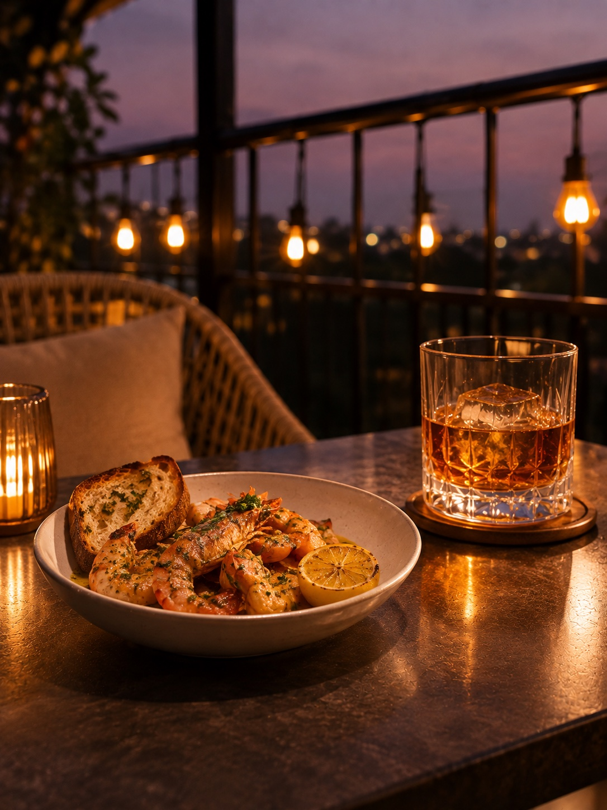
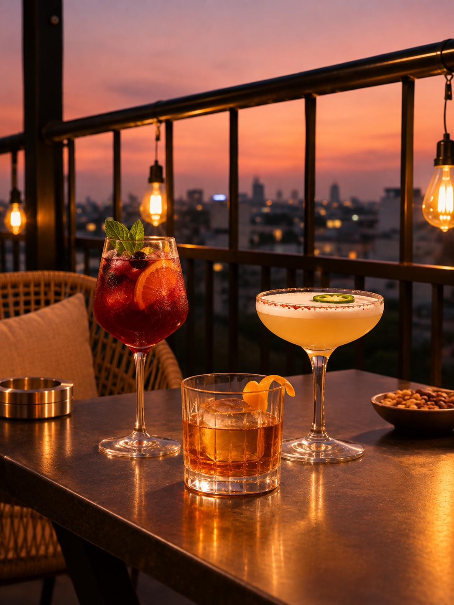
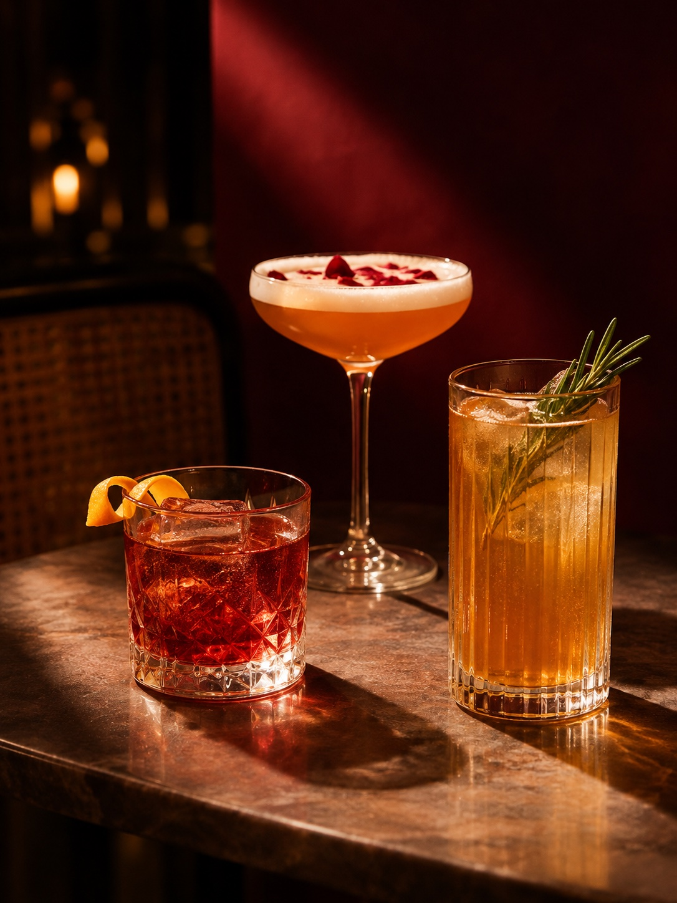
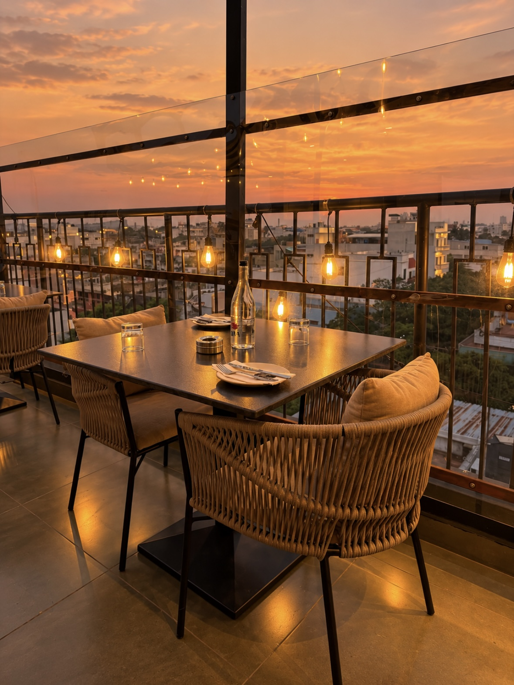
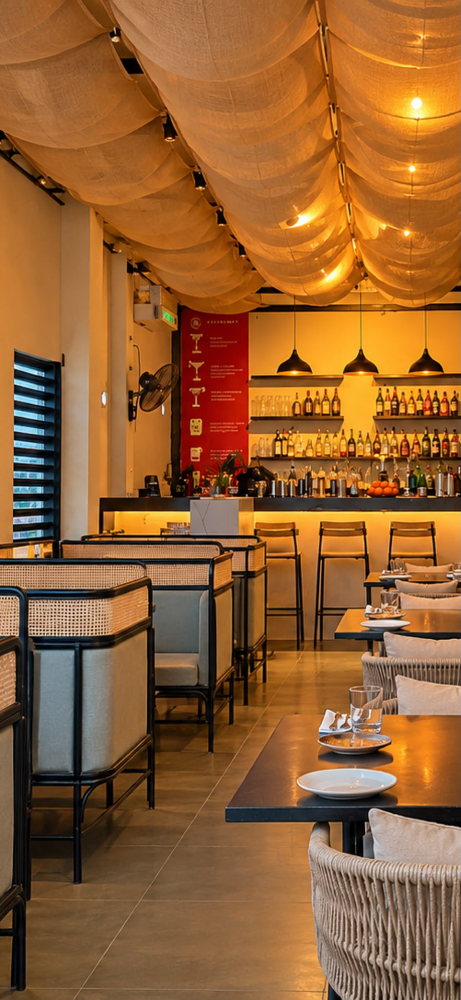
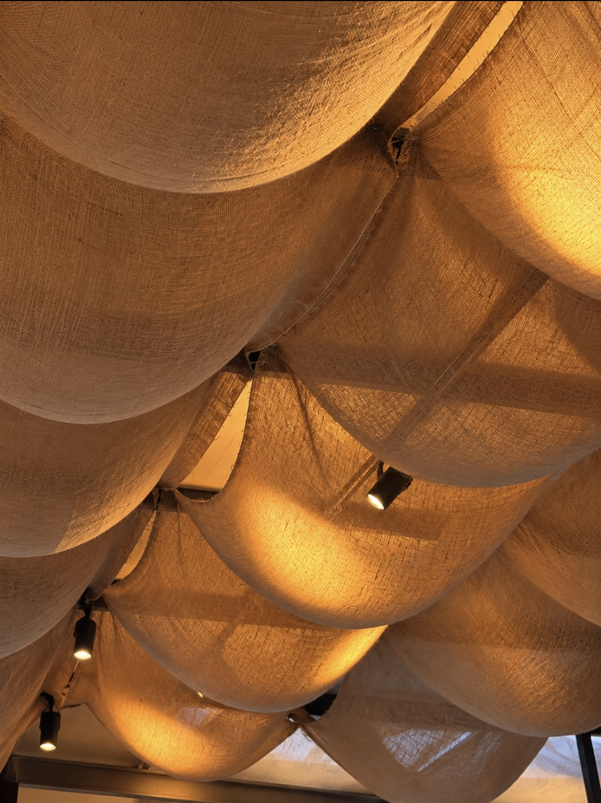
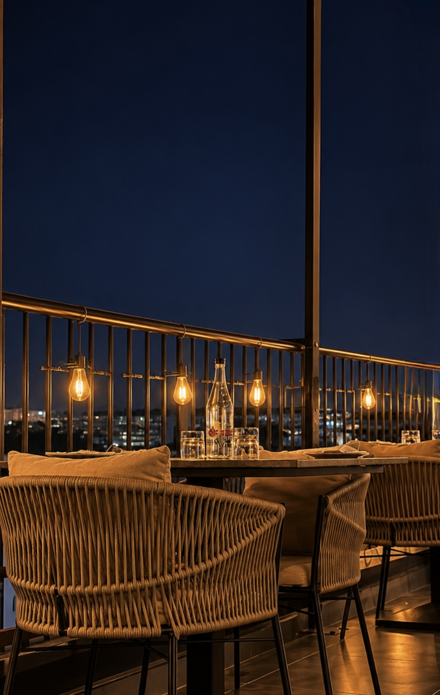
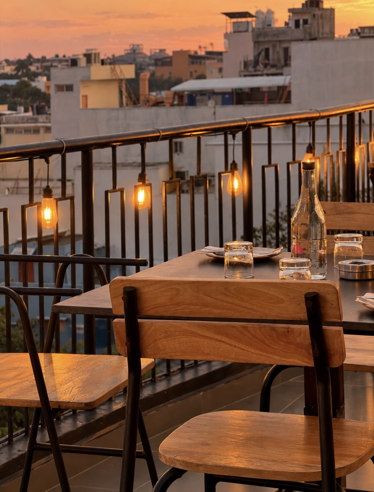

CUPID HOUSE · PUDUCHERRY
Rooftop
dining.
Food, cocktails and sunset views on Mission Street.



170 MISSION STREETMG ROAD AREA · PUDUCHERRY
CUPID HOUSE · MISSION STREETMG ROAD AREA · PUDUCHERRY
Rooftop dining
in Puducherry.
Cupid House is at 170 Mission Street, in the MG Road area. Join us for food, drinks and a view over the city.
View location ↗
ROOFTOP & INDOOR SEATINGInside
Inside
Cupid House.
Fabric canopies, warm lighting and tables for dinner or drinks.
Visit us ↗THE DINING ROOMINDOOR SEATING

Canopy seating
and a rooftop bar.
MORE PHOTOS · CUPID HOUSE
Around the rooftop.
Dining room, canopy and rooftop views.



MG ROAD AREA · PUDUCHERRY
Get directions ↗